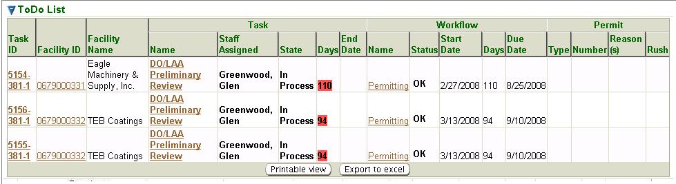

ToDos is the initial page you see when you select the Home
tab.
However, you may also get to the ToDos
page in the second-level menu
from any page within the Home tab
no matter how you reached that page.
This is a standard search page, as described in Common Search Paradigm.
The Search Criteria and
Result List for this search are described below. ToDos
specifically is
a search page for all tasks that have been assigned to a system user.
You may search for a ToDos
list on the basis of any or all of the
criteria listed below. You can fill in or choose a value for whichever
fields you want to use to restrict your search.
Facility ID: enter a
FAC ID or a partial FAC ID and * or % in any position as a wildcard (example: 012*, %012504,
or *0125*, etc.) to filter
for ToDos
for an individual facility or group of facilities.
Facility
Name: enter the whole name or a partial name and * or %
in
any position as wildcard (example: An*, %Anh, or *Anh*, etc.) to filter
for ToDos
for an individual facility or group of facilities.
Workflow
Type: filters for only tasks associated with workflows of
the following specific types: Emission
Reporting; Permitting;
or Other. Can also filter for all by selecting To Do Task.
Staff:
select from a pick list of possible users. The pick list is
populated with the names of all users in the system.
Task State:
select from a pick list of possible task states, for example: Completed;
Pending;
or Cancelled.
In Process
is selected by default.
Task
Name: select from a pick list of possible tasks. The pick
list
is populated with the names of all tasks in all types of workflows.
By default, the search criteria are specified to select all of
your ToDos
that are In Process. You may of course modify these values before you
submit your search. The more criteria you are able to specify, the more
precise your search will be. Broad searches can retrieve many records
that can make it difficult to hone in on the information you are really
looking for.
After you complete the criteria for the search you want, and
click on , the system searches all of the records
for all the ToDos
stored in its
database, selects the ones that meet ALL of the criteria you have
specified, and returns summary information about those ToDos in
a
datagrid. The datagrid below is the result of a search submitted with
search criteria specified to select all CO Review
Determination (Task
Name) ToDos
for Facility
ID’s starting with 15 (wildcard search = 15*)
for Administrator,
Admin (Staff)
that are Completed
(Task State).

ToDos Search Results Datagrid
The summary data returned includes columns providing Task ID, Facility
ID, Facility Name, (Task) Name, (Task) Staff Assigned, (Task) State,
(Task) Start Date, (Task) Days, (Task) Due Date, (Workflow) Name,
(Workflow) Status, (Workflow) Start Date, (Workflow) Days
and
(Workflow)
Due Date for all the ToDos
that match your search criteria.
The following summary data is further explained:
Task
ID: an ID number that was assigned by the system
formatted as a
series of three numbers separated by a dash and consisting of: workflow
ID - task number - iteration number. The iteration number will be ‘1’
initially and change to ‘2’ if the task is repeated, for example when a
reviewer returns a permit for further technical review. Click Task ID
to go to the object of the task, e.g., application, permit, report.
Facility
ID: ten digit ID assigned to the associated facility.
Click
Facility
ID to go to the Facility Detail.
(Task)
Name: specific name of the task. Click Name to
go to the Task
Profile.
(Task)
Start Date: date from which processing time is calculated
for
the workflow.
(Task)
Day: the number of days the task has been
active (i.e., on the clock) or the time taken for completion of the
task.
(Task)
Due Date: date by which the workflow is expected to be
completed, system-calculated by adding the preprogrammed time allowance
for the workflow to the Start Date.
(Workflow)
Name: specific type
of workflow such as Permitting
or Extension.
Info indicates a ToDo Task
was created via the second-level menu Create ToDo Task.
Click Name
to
go to the Workflow
Diagram.
(Workflow)
Status: indication of whether the workflow is projected
to be completed on time. The Status
corresponds to the color-coded
timeline at the top of the Workflow Diagram.
The three possible Status’
include: OK
(on time); JP
(jeopardy/nearing the deadline/yellow); or
LA
(late/past the deadline/red).
(Workflow)
Start Date: the date from which processing time is
calculated for the workflow. This date is set when the workflow is
created but it can be changed.
(Workflow)
Day: the number of days
the workflow has been active (i.e., on the clock) or the time taken for
completion of the workflow.
(Workflow)
Due Date: the date by which the workflow is expected to
be completed, system-calculated adding the preprogrammed time allowance
for the workflow to the Start
Date.